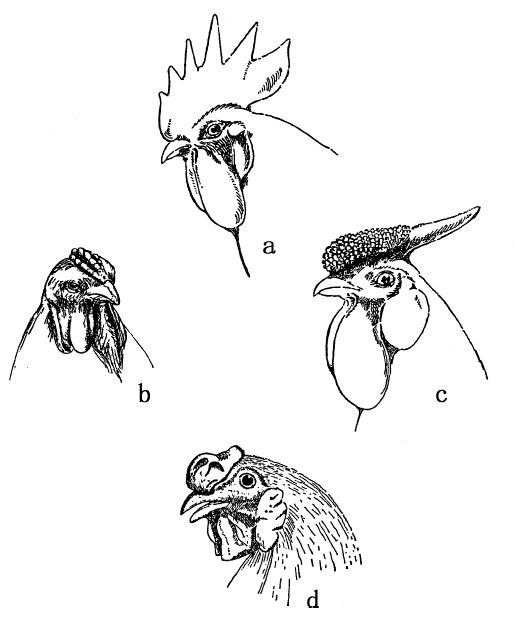

第6章 突变型隐性基因的发生是否由于基因的损失？
应该回想一下，隐性基因和显性基因的区别大都是勉强划分的。经验证明，性状决不总是隐性，也不总是显性，相反，在大多数例子里，一种性状既不完全是显性，也不完全是隐性。换句话说，含有一个显性和一个隐性的杂种型，大概介于两种类型之间，即两种基因对于发生出来的性状都有一些影响。认清了这种关系，那么，主张隐性基因是一种缺失的理论便站不住脚了。
伍兹霍尔海洋生物实验室外景图。伍兹霍尔是马萨诸塞州东南部的一个海滨村庄，这里的海洋生物资源非常丰富，1885年，美国生物学家以那不勒斯动物研究所为榜样，在此建立了海洋生物实验室。摩尔根在哥伦比亚大学期间，每年夏天放暑假时都要到此来进行研究工作。
孟德尔未曾考虑基因的起源和性质问题。在他的公式里，他用大写字母代表显性基因，小写字母代表隐性基因。纯显性为AA，纯隐性为aa，杂种或子 1 为Aa。在他实验用的豌豆里，黄和绿、高和矮、圆和皱等等性状早已存在，所以起源不成为问题。直到以后考虑突变型和野生种的关系时，突变型的起源才引起注意。现在有一个特殊例子，即家鸡中的玫瑰冠和豆状冠，对于把隐性基因说成是损失或缺失的想法似乎有些关系。
某个品种的家鸡具有玫瑰冠（图43），并繁殖玫瑰冠的后代。另一品种具有豆状冠，也繁殖豆状冠的后代。两个品种杂交，杂交一代具有新型的胡桃冠。再让子代胡桃冠家鸡互配，孙代中得胡桃冠9、玫瑰冠3、豆状冠3和单片冠1。上述数字结果证明：这里有两对基因，即玫瑰状与非玫瑰状，豆状和非豆状。单片冠为非玫瑰状和非豆状，当时把这两者解释为玫瑰状基因与豆状基因的缺失。然而豆状基因的缺失和玫瑰状基因的缺失，并不一定证明这两个基因的等位性也不存在。这两种等位性也许只是不能产生豆状冠和不能产生玫瑰冠的两个别的基因。

图43 家鸡的冠型：a.单片冠，b.豆状冠，c.玫瑰冠，d.胡桃冠
（豆状型同玫瑰状冠杂交所生的杂种或子 1 ）
以上结果可以从另一方面来谈，更能说明其中的情节。据说家鸡是从野生原鸡变化出来的。假设原鸡具有单片冠，又假设在某一个时期内，某一原鸡发生了一个显性突变，于是长出了豆状冠；在另一个时期内，另一原鸡发生了另一种显性突变，于是长出了玫瑰冠。按理推测，上述杂交中，孙代的单式冠会是原来两个野生型基因存在的结果。这样，豆状冠族（PP）会含有野生型基因（rr），由于这种基因的突变便发生了玫瑰冠。同样，玫瑰冠族（RR）会含有野生型基因（pp），由于这种基因的突变便发生了豆状冠。因此，豆状冠族的公式为PPrr，而玫瑰冠族的公式为RRpp。两族的生殖细胞分别为Pr和Rp，因此子 1 应该为PpRr。从这两个显性，得出了一个新型冠即胡桃冠。子代既有两对基因，所以孙代势必有16种组合。其中一种为pprr即单式冠。这样，单式冠的发生是参加杂交的野生型隐性基因重新组合的结果。